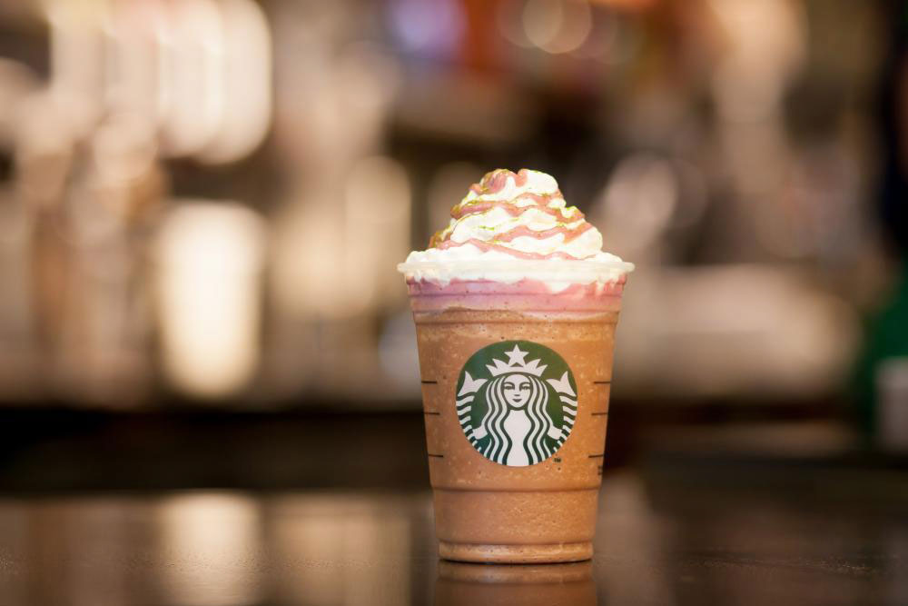

Entregas del Proyecto de Visualización de la Información:
En esta página se presentan las entregas del proyecto de visualización de la información: "Visualización Nutricional de Bebidas de Starbucks".

Primera Parte:
Esta parte del proyecto se enfoca en la visualización que permite representar las proporciones nutricionales de las bebidas de Starbucks de manera amigable para el usuario.
Se busca que esta visualización muestre al espectador las concentraciones de azúcares no nutricionales presentes en diferentes bebidas de la cafetería Starbucks.
Cómo primera idea, se realiza un gráfico de burbujas que muetra las proporcioes de azpucares respecto al eje Y y a la vez entrega información sobre otros contenidos nutricionales como Vitaminas y Grasas. A continuación en el siguiente botón puede acceder a la primera concepción de dicho gráfico e interactuar con él:
Ir a la Idea 1Desarrollado por:
- Camila Matamala
- Fernanda Oyarzún
- Octavia Robledo